AAPA STAMBESHWAR
Lord Shiva was narrating the various sacred Teerths (Ponds), Koop (Wells) and places of worship in Kashi. Lord Shiva described such places with pleasure (Kashi Khand, Chapter 97).
In the vicinity of Madhyameshwar is the Aapa Stambeshwar Ling. By worshipping this Ling, the devotee is blessed with Brahma Gyan (ultimate knowledge). In the present day context, this may be taken as good education/studies.
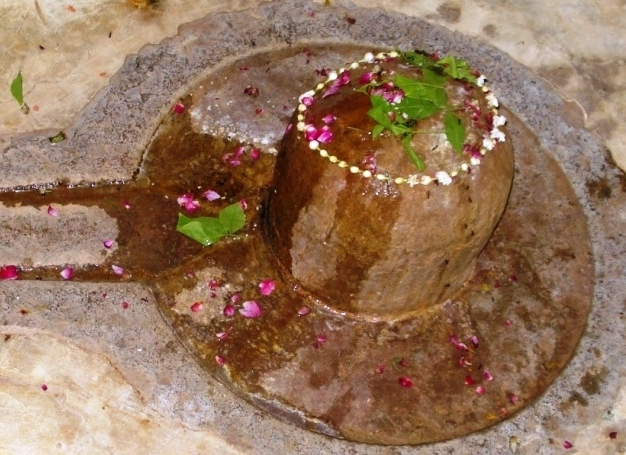
(AAPA STAMBESHWAR)
LOCATION OF AAPA STAMBESHWAR
Aapa Stambeshwar is located at K-53/66, Dara Nagar. People can approach this temple by rickshaw through Bisheshwarganj/GPO and walk through the locality of Madhyameshwar temple. The landmark for this temple is a well and Boodhwa Baba temple (Hanuman).
TYPES OF POOJA
The temple is open throughout the day. People can perform pooja as per their convenience with sacred Ganges water and flowers etc.
ATMA VEERESHWAR
According to Kashi Khand, Chapater 82, Lord Shiva described the power of Veereshwar Ling as under :
Once a kingdom was ruled by a very religious minded ruler named Amitrajit. He was a staunch devotee of Lord Vishnu and he made it a rule that all the citizens of his kingdom also became devotees of Lord Vishnu. One day Narad Rishi visited his palace and was welcomed with due respect by the King.
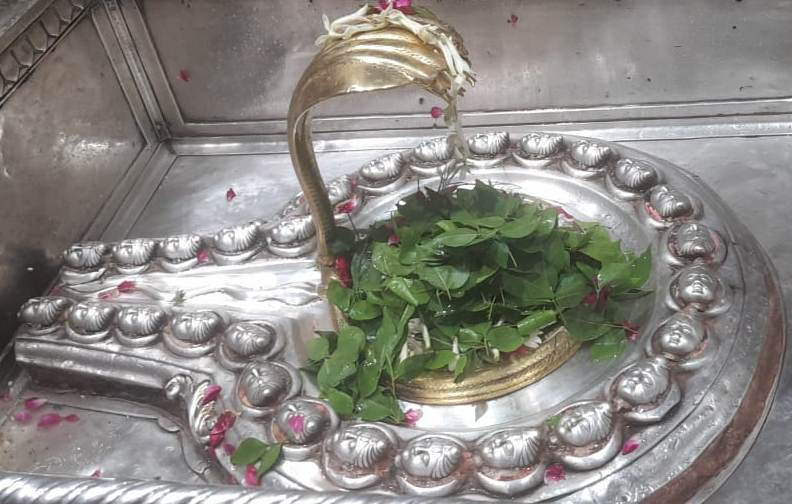
(ATMA VEERESHWAR)
As per the direction of Narad Rishi, King Amitrajit saved one beautiful girl called Malayagandini from the clutches of one evil person. The King subsequently married her and they came to Kashi and were immediately happy with the beautiful surroundings. In due course, Malayagandini was blessed with a handsome male child, who was destined to become 16 years old, immediately after birth. However, since he was born in an inauspicious planetary combination, the Ministers of the King told the Queen that she would have to sacrifice the child, otherwise the King would die.
In order to save the King, she sent the child to Vikata Devi. But no one was inclined to slay the handsome boy who had been 16 years of age by then. The boy undertook severe penance of Lord Shiva, whereupon Lord Shiva appeared before him in form of a Ling. This Ling was named by Lord Shiva as Veereshwar Ling.
According to Lord Shiva, a person who performs Pooja, Abhishek and archana of Veereshwar Ling attains all sort of happiness, prosperity and success.
Kashi Khand, Chapter 83, states that a person who performs pooja of Veereshwar gets the benefit of doing pooja of three crore Lingas. (The time after twilight – sandhya kaal, is considered night time).
——————————————————————————————————-
Kashi Khand, Chapter 83, Shlok 112
यस्तु वीरेश्वरं लिङ्गं नक्तमभ्यर्चयिष्यति
तेन त्रिकोटिसंख्यानि लिङ्गानीहाऽर्चितानि वै
A devotee who performs pooja of (Atma) Veereshwar Ling (in Kashi), at night, will get the punya benefit of performing pooja of three crore lings, here itself.
———————————————————————————————————
It is considered auspicious to worship this Ling during Chaturdasi nights without going to sleep or bed. It is also considered auspicious to perform abhishek of this Ling with Panch Amritam (five ingredients namely milk, curd, honey, sugar and clarified butter) (Kashi Khand ibid).
——————————————————————————————————-
Kashi Khand, Chapter 83, Shlok 117
यदन्यत्र फलं लिङ्गे कोटिपुष्पप्रदानतः
तदेकेनैव पुष्पेण वीरेशे नाऽत्र संशयः
Whatever punya is derived by offering one crore flowers to other lings, the same punya is derived by offering just one flower to (Atma) Veereshwar in Kashi. There is no doubt about that.
———————————————————————————————————
Kashi Khand, Chapter 11, mentions the importance of pooja/archana of Atma Veereshwar for being blessed with a child. One Sage Vishwanar and his pious wife prayed at various places in Kashi and finally arrived at the Siddha Peeth of Atma Veereshwar. He performed all rituals and rites at this temple for many months, reciting a prayer called Abhilasha Ashtakam and one day he saw a boy aged eight years standing near the Ling. The sage started worshipping the boy with the same fervour as one would worship Lord Shiva with.
The boy was none other than Lord Shiva himself who directed his devotees to recite Abhilasha Ashtakam for one year, as was done by Sage Vishwanar, which will certainly result in progeny for childless couples. Subsequently, the boy disappeared into the Atma Veereshwar Ling.
Though this Ling is mentioned as Veereshwar in Kashi Khand, presently, this ling is called as Atma Veereshwar or the soul of Veereshwar.
LOCATION OF THE TEMPLE
Atma Veereshwar temple is located at Ck-7/158, Scindia Ghat which is a famous locality in Varanasi. This place can be reached by boat through Scindia Ghat. Alternatively one can travel in cycle rickshaw upto Chowk and walk down the gullies to reach the temple. Reciting Rudra Japa at Atma Veereshwar temple is very fruitful.
LOCATION OF ATMA VEERESHWAR TEMPLE AS PER GOOGLE MAPS IS GIVEN BELOW
Please watch our YouTube Video about Atma Veereshwar at following Link
https://www.youtube.com/watch?v=enf8IFQT_u4&t=5s
TYPES OF POOJAS
The temple is open for worship 05.00 a.m. to 11.30 a.m. and from 12.30 p.m. to 9.30. Special Aarti is held from 07.00 to 8.30 p.m. For doing special pooja, it is advisable to consult the Poojari before hand.
DHARMESHWAR
Goddess Parvaty asked Lord Shiva to describe the various important Shiv Lings in Kashi. Lord Shiva told her, once upon a time, in Anand Van (Kashi) Yam Raj installed a Ling and underwent severe penance in prayer of Lord Shiva. His prayers went on during extremely cold winters and torrid summers. The intensity of his prayers went on increasing; he stood on one leg and prayed for several years and finally stood on one toe for several days during his penance. At last Lord Shiva appeared before him and conferred the title of Dharma Raja on Yam Raj. (In some mantras like Sandhya Vandana, the mantra reads as Yamaya Dharma Rajaya etc. etc.) The Ling installed by Yam Raj was named by Lord Shiva as Dharmeshwar Ling. On seeing Lord Shiva in person, Yam Raj was dumb struck and could not ask what he wanted. He was overwhelmed with joy.
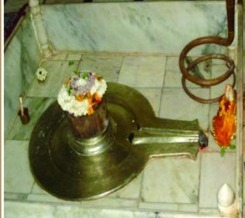
(DHARMESHWAR)
Lord Shiva took the initiative and told Yam Raj that the latter should do proper justice to people who die, those committing sins should face punishment and those performing punya Karma (virtuous deeds) should go to heaven. The judgement should be fair. Those who live in Kashi and engage in pooja etc. should be free from all sins committed in any generation. Yam Raj as such is for evil persons/sinners and he is Dharma Raj for good people.
Those persons who take bath in Dharma Koop and perform pooja of Dharmeshwar are cleansed of all sins. Yam Raj agreed to do as he was directed by Lord Shiva. (Kashi Khand, Chapter 78).
——————————————————————————————————-
Kashi Khand, Chapter 78, Shlok 48
कृत्याऽप्यघानामिह य: सहस्रं धर्मेश्वरं पश्यति दैवयोगात्
सहेतनो जातु स नारकीं व्यथां कथां तदीयां दिवि कुर्वतेऽमरा:
Even after committing thousands of sins, if a devotee – by God’s Grace – worships Dharmeshwar, he will not have to face the hardships of hell, on the contrary devtaas in heaven will keep discussing about him.
———————————————————————————————————
To this day, it is believed that those who live in Kashi, performing regular poojas etc. are cleansed of all sins.
LOCATION OF THE TEMPLE
Dharmeshwar Temple is located at D-2/21, Mir Ghat. The temple is approachable from a famous locality called Dashashwamedh. People can travel upto Dashashwamedh Vishwanath Gulli by Rickshaw and then to the temple via famous Vishalakshi Gauri temple by foot. A devotee who has finished darshan of Visweshwar Temple, can proceed towards the Saraswati Phatak gate and walk towards Vishalakshi Gauri temple, to reach Dharmeshwar. Alternatively, they can travel to Mirghat by boat and climb the steps.
The entire area covering Dharmeshwar, Dharma Koop, Vishalakshi Devi etc. is a powerful Shakti Peeth (seat of vital energy) and any prayer offered at this place begets maximum benefits to the devotees.
Please watch our YouTube Video about Dharmeshwar at following Link
https://www.youtube.com/watch?v=6zhg8dmD8V8&t=4s
TYPES OF POOJAS
The temple is open for worship from 05.00 a.m. to 12.30 p.m. and from 05.00 p.m. to 07.30 p.m. Aarties are performed at 05.00 a.m. and 07.00 p.m.
Performing pooja in Dharmeshwar temple in the month of Kartik (October 20-November-20), Shukla Paksha Ashtami, 8th day after Amavasya, is considered very auspicious.
There is a well nearby known as Dharma Koop. Shraaddh Karma performed here after taking bath in Dharma Koop is equivalent to performing Shraaddh in Gaya.
For doing special pooja etc., it is advisable to consult the Poojari before hand.
GABHASTEESHWAR
Once Lord Surya installed a Shiv Ling and a devi idol at Panchanada Teerth (Panchganga Ghat) and started immensely propitiating Lord Shiva. (Importance of Panchganga Ghat is described elsewhere).
The intensity of Lord Surya’s prayers started reflecting in the extreme heat generated thereby. Sunrays started getting warmer and warmer. Finally it became extremely unbearable for all living beings and all physical activities practically came to a standstill.
Lord Shiva and Goddess Parvaty came to know about this and they appeared in person in front of Lord Surya. Lord Surya opened his eyes and started singing praises of Goddess Parvaty and Lord Shiva whereupon both of them became extremely happy. They granted several divine wishes to Lord Surya.
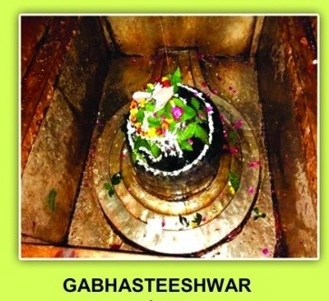
Lord Shiva told Lord Surya that the Shiv Ling installed by Lord Surya will be known as Gabhasteeshwar. A person who takes bath at Pancha Nada Teerth (Panchganga) and worships Gabhastheeswar will be free from all sins and will certainly attain Moksha. (Kashi Khand, Chapter 49)
——————————————————————————————————-
Kashi Khand, Chapter 49, Shlok 77
त्वया प्रतिष्ठितं लिङ्गं गभस्तीश्वरसंज्ञितम्
सेवितं भक्तिभावेन सर्वसिद्धिसमर्पकम्
(Lord Shiva says to the Sun God), whoever devotedly worships this Linga named Gabhastishwar, installed by you, will get all the achievements/ accomplishments.
———————————————————————————————————
LOCATION OF GABHASTEESHWAR
Gabhastheeshwar is located at K-24/34, Mangala Gauri Temple. Devotees can travel upto Bhaironath by auto or cycle rickshaw and walk upto this place. Mangala Gauri temple is a famous landmark. Alternatively, they can take a boat ride upto Panchganga Ghat and reach this temple through Ghats.
Please watch our YouTube Video about Gabhasteeshwar at following Link
https://www.youtube.com/watch?v=15x9DZdnTno
TYPES OF POOJA
The temple is open from 05.00 a.m. to 01.00 p.m. and from 03.00 p.m. to 10 p.m. Aarties are performed in the evening. For doing any special pooja etc., it is advisable to contact the Poojari.
Gabhasteeshwar has been given much importance with respect to Sun. Devotees who are having afflictions in their Horoscope on account of planet Sun’s adverse position, get relief by worshipping this temple since the temple houses Gabhasteeshwar (Shiv Ling installed by Lord Surya) and Mayukh Aditya (one of the places of worship of Lord Surya in Kashi).
POOJARIS OF THE TEMPLE
Shri Manoj Kumar Pandey is the chief priest and his cell number is (0)9305645502. Other priest is Shri Umesh Kumar Sharma whose cell number is (0)9450284728.
KEDARESHWAR
Kedareshwar is a Shiva temple in Himalayas which is one of the twelve jyotirlingas. According to Kashi Khand, one gentleman performed the upnayanam ceremony of his son named Vashisht at Ujjain. The boy, Vashisht, was very religious and performed all poojas including Linga pooja etc. He used to visit Kedareshwar Temple in Himalayas alongwith his Guru regularly and perform pooja of Lord Kedareshwar.
Once, on the way to Kedareshwar, the Guru died unfortunately and since he had all along done only good deeds, he found a place for himself at Mount Kailas. Vashisht who was 12 at that time, got an enlightenment that those who go for having darshan of Kedareshwar are blessed with all punyas. He then went and settled down at Kashi.
But on all Chaitra Month Poornima days (March 20-April 21), Vashisht (who remained a Brahmachari) used to visit Kedareshwar Ling at Himalayas and this went on for 61 years. But due to old age, he could not move out and he started praying to Lord Shiva at Kashi. Lord Shiva blessed him with a wish and Vashisht requested that Lord Shiva should kindly appear at Kashi itself as Kedareshwar.
——————————————————————————————————-
Kashi Khand, Chapter 77, Shlok 46
तुषाराद्रिम् समारुह्य केदारं वीक्ष्य यत्फलं
तत्फलं सप्तगुणितं काश्यां केदारदर्शने
Worshipping Kedareshwar in Kashi will yield seven times punya which accrues from worshipping Kedar Ling in Himalayas.
———————————————————————————————————
Lord Shiva was overwhelmed with the sincerity and devotion of Vashisht and granted accordingly. He appeared as Kedareshwar at Kashi and told Vashisht that performing pooja at Kedareshwar at Kashi will yield seven times greater punya as compared to performing pooja at Kedareshwar at Himalayas (Kashi Khand, Chapter 77).
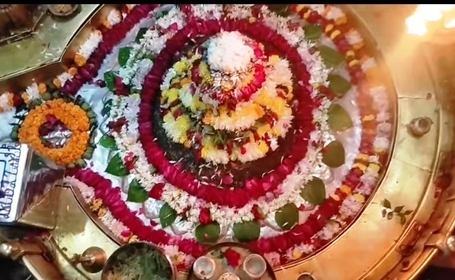
(KEDARESHWAR)
Gauri Kund, Hans teerth and Manasarovar teerth find mention in Kashi Khand in reference to Kedareshwar but now only Gauri Kund remains. Manasarovar and Hans Teerth have dried up.
People observe vrath (fast) on Chaitra Month (March 20-April 20) Shukla Paksha Chaturdasi and break their fast on Poornima day, the next day, after performing pooja of Kedareshwar. This is as stated in Kashi Khand where Vashisht used to pray Lord Kedareshwar on Chaitra Poornima days (as mentioned in para above).
——————————————————————————————————-
Kashi Khand, Chapter 77, Shlok 05
गृहाद्विनिर्गते पुंसि केदारमभिनिश्चितं
जन्मद्वयार्जितं पापं शरीरदापी निर्वजेत्
Accumulated sins of a devotee for two births will be certainly washed off from his body, if he proceeds from his home for worshipping Kedareshwar Ling (in Kashi).
———————————————————————————————————
Kashi is divided into three Khands, Omkar Khand, Vishweshwar Khand and Kedar Khand. It is believed that a person who dies in Kashi attains Mukti. Going a step further, if the person dies in the area governed by Kedar Khand, he obtains immediate mukti while in other two Khands, there are some sort of hardships to be faced.
On all India basis there are twelve Jyotirlings and there are twelve important Shiv Lings in Kashi which represent the aforesaid twelve Jyotirlings. Kedareshwar (Varanasi) is worshipped as Kedareshwar Jyotirling (Uttarakhand).
LOCATION OF THE TEMPLE
Kedareshwar temple is located at B-6/102, Kedar Ghat which is a famous locality. It is approachable by cycle rickshaw. Alternatively, people can travel upto a locality called Sonarpura by Car or Auto rickshaw and travel on foot. People may also travel by boat to Kedar Ghat and walk up the steps directly into the temple.
Please watch our YouTube Video about Triambakeshwar, Kedareshwar and Grishneshwar at following Link
https://www.youtube.com/watch?v=eLauertky2c&t=24s
TYPES OF POOJAS
The temple is open for worship 03.00 a.m. to 11.00 p.m. Mangala Aarti is performed at 03.15 a.m., 2nd Aarti at 10.00 a.m., 3rd Aarti at 05.30 p.m. and Shayan Aarti at 10.30 p.m. Timings may change depending upon the season.
Important days are Ekadasi, Pradosham and Poornima days. Anna Abhishek is performed once in a year. In this ritual, the Shiv Ling is covered with cooked rice.
Taking bath in Ganges on every Monday and performing pooja/abhishek of Lord Kedareshwar is very auspicious. Much importance to attached to poojas on Mondays during Shravan month (July 23 to August 20) and most importantly on last Monday of that month. It is believed that performing Shraaddh ceremony on Amavasya which falls on Tuesday at Kedar Ghat is very auspicious.
The poojas at the temple are performed by Kumaraswamy Mutt of Tamil Nadu. For doing special pooja etc., it is advisable to consult the Poojari before hand.
POOJARIS OF THE TEMPLE
For performing any pooja at the temple, devotees may contact The Agent, Kumaraswamy Mutt, Kedar Ghat, Varanasi. The telephone number of Kumaraswamy Mutt is 0542-2454064. E-mail id is agentskmutt@gmail.com.
Kumaraswamy Mutt is a well managed Trust and offers rooms of various types for stay also. Devotees wishing to stay in Varanasi may contact the Agent at the above address.
KRITHI VASESHWAR
Lord Shiva was describing the fame of Ratneshwar to Goddess Parvaty and precisely at that time Mahishasur’s son Gajasur was aggressively beating up and killing various Shiv Gans (attendants / servitors). Wherever his steps touched the ground there were earthquake like tremors. His gigantic hands uprooted all the trees and his forceful exhalation of breath caused huge tidal waves in the ocean.
Left alone, Gajasur would have created havoc in the world and Lord Shiva did not want any sort of disturbance in the Punya Kshetra : Kashi. When Gajasur approached him in a speed, Lord Shiva pierced him with his Trishul and lifted him high in the sky. Before dying Gajasur told Lord Shiva that he was extremely happy that he faced death at the hands of Lord Shiva and this was indeed a bliss in disguise for him. All living beings have to die one day or the other and he prayed that such kind of death should be a boon to all. He also wished that, after his death, his skin should adorn Lord Shiva for ever and he (Gajasur) would have the satisfaction of being in constant touch of Lord Shiva.
Lord Shiva agreed accordingly. He further stated that Gajasur had attained his death in the Avimukta Kshetra called Kashi and his body will attain the form of a huge Shiv Ling precisely at that place. This Ling will be called Kriti Vaseshwar. Krithi Vaseshwar will be a huge/enormous ling, much bigger than any of the Shiv Lings in Kashi. For the benefit of mankind, Lord Shiva stated that he and his family will always remain in Krithi Vaseshwar Ling.

(KRITHI VASESHWAR)
All sins committed in previous births and present births are washed away by performing various poojas and good/righteous actions. But a mere darshan of Krithi Vaseshwar would cleanse the devotee of all his sins. Whatever benefit is derived by reciting seven crore Rudra Jap, will be attained simply by one Rudra Jap (japam) in front of Krithi Vaseshwar. (Kashi Khand, Chapter sixty eight). Jap or Japam is repeated recitation of a mantra or shloka.
According to Brahma Vaivart Puran, Krithi Vaseshwar makes the life of Kashi Vasis (residents of Kashi who have adopted divine life) fruitful and gives Moksha to devotees who pray at this temple. According to Koormapuran, whether a devotee attains Moksha even after thousand births or not, with blessings of Krithi Vaseshwar, the devotee certainly attains moksha and is liberated.
Elsewhere in Kashi Khand, Goddess Parvaty desired to know about the Lingas which are worshipped in Kashi and which are capable of giving mukti. Lord Shiva told Goddess Parvaty that there are crores of Lingas in Kashi (Kashi Khand, Chapter 73) of which many are Swayambhu Lingas and many have been established by devotees after observing vedic rituals.
Of the above Lings, there are fourteen prominent Lingas and by merely uttering the names of such Lings, the devotee is absolved of all his sins. Fourth among such Lings is Krithi Vaseshwar Ling.
——————————————————————————————————-
Kashi Khand, Chapter 68, Shlok 43
सप्तकोटि महारुद्रै: सुजप्तैर्यत्फलं भवेत्
तत्फलं लभ्यते काश्यां पूजनात्क्रित्तिवासास:
Performing Pooja of Krithi Vaaseshwar in Kashi, will yield punya of reciting seven crore Maha Rudrams.
———————————————————————————————————
During medieval times, many Mughal rulers destroyed various temples. Of the important temples of Kashi which were destroyed three were prominent, i.e. Vishweshwar Temple, Krithi Vaseshwar Temple and Bindu Madhav Temple (Vishnu). Krithi Vaseshwar temple was situated to the north of Kal Bhairav temple and was destroyed by Aurangzeb. Near the temple was Hans Teerth. People were known to take bath in Hans (Swan) Teerth and pray at Krithi Vaseshwar temple.
After destruction of the temple, the reconstruction was undertaken by Raja Patnimal after a long gap and the present temple was constructed at a place to the South of the ancient temple and worship is being done at this newly constructed temple now.
One important point needs to be mentioned here. Original Krithi Vaseshwar was in a huge temple premises. As mentioned in the foregoing paragraphs, a mosque was constructed after destruction of the temple and there was a fountain, precisely at the place where Krithi Vaseshwar Ling existed once. For several centuries, devotees used to pray at the fountain on Shiv Ratri days, at the spot where the Ling stood once. Several years back, one huge Ling had been installed again on that spot. It is learnt that the devotees are offering regular prayers at the above spot also.
Special importance is on all Chaturdasi days after Poornima (one day before Amavasya). A person undergoing Vratham on the above day and doing pooja at Krithi Vaseshwar temple attains highest level of happiness. Kashi Khand lays special importance for pooja/archana during Magha month (Jan. 21 – Feb. 20), Chaturdasi day after Amavasya (fourteenth day) and Chaitra month (March – April) Poornima days. Performing pooja on such days will be highly beneficial for the devotees.
LOCATION OF THE TEMPLE
Krithi Vaseshwar temple is located at K-46/23, West of Har Tirath Pond, in Mrityunay Mahadev Road. Hans Teerth as mentioned in ancient texts is now known as Har Tirath and many buildings have now come up where once the pond existed. The temple is approachable from a famous locality called Bishweshwarganj, which is a great mandi (market place) and travelling to the temple in cycle rickshaw is convenient.
Please watch our YouTube Video about Krithi Vaseshwar at following Link
https://www.youtube.com/watch?v=OTFgs3keGHo&t=24s
TYPES OF POOJAS
The temple is open from 04.00 a.m. to 01.30 p.m. and from 05.00 p.m. to 10.00 p.m. Mangala Aarti is at 04.00 a.m., aarties are performed at 08.00 am, 12.00 noon, 08.00 p.m. and Shayan Aarti at 10.00 p.m.
For doing special pooja, it is advisable to consult the Poojari before hand.
MRITYUNJAYESHWAR (MRITYUNJAY MAHADEV)
Lord Shiva was describing the various sacred Teerths (Ponds), Koops (Wells) and places of worship in Kashi. Lord Shiva described such places with pleasure (Kashi Khand, Chapter 97).
In the vicinity of Kaleshwar is the Mrityunjayeshwar. This Ling is capable of keeping untimely death away from devotees. In the vicinity of the Ling is Kalodak Koop (Well). The water from the well is capable of curing all diseases.
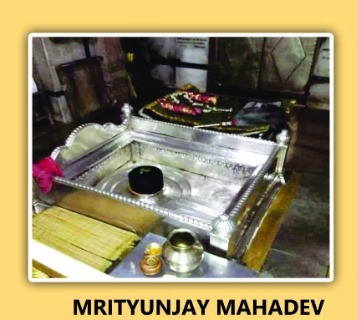
Mrityunjayeshwar is also referred to as Apa Mrityu Hareshwar in Kashi Khand (the Lord who wards off untimely death).
Please watch our YouTube Video about Mrityunjay Mahadev at following Link
https://www.youtube.com/watch?v=L6Hr3HZADGg&t=10s
LOCATION OF MRITYUNJAYESHWAR
Mrityunjayeshwar is located at K-52/39, Vriddha Kal, Mrityunjay Mahadev Temple. People can approach this temple by rickshaw through Bisheshwarganj/GPO.
Local devotees call this temple as Mrityunjay Mahadev and the deity is quite famous by that name.
LOCATION OF MRITYUNJAY MAHADEV TEMPLE AS PER GOOGLE MAPS IS GIVEN BELOW
TYPES OF POOJA
The temple is open from 04.00 a.m. to 12.00 midnight. The doors of the sanctum sanctorum may remain closed at certain times on account of Shringar (Decoration) etc. There are three aarties at 05.30 a.m. in the morning, 6.30 p.m. and in the night.
As the name implies, Mrityu is death, Jay is victory. Therefore, the combination may be taken as victory over death.
People who are afflicted with fatal planetary combinations in their horoscope, indicating untimely death, perform Maha Mrityunjay Jap at this place and many devotees have succeeded in their endeavours.
OMKARESHWAR
According to Kashi Khand, Chapter 73, Goddess Parvati wanted to know about Omkareshwar Ling and Lord Shiva narrated as under :
Once Lord Brahma underwent severe penance for several long years and a mighty or very strong force erupted from beneath, piercing the ground, radiating divine light all over. This assumed the form of a divine Ling and Lord Brahma beheld a divine energy which was representative of all the Vedas (Rig, Yajur and Sam Veda), the energy which represented Akaar, Ukaar and Makaar. Lord Brahma saw in that divine light, the energy of OM which governs the entire universe.
Lord Brahma visualized a creature with four horns, seven hands, two heads. The Lord also saw a divine energy encompassing all the Vedas, Puranas, five Brahms (Akaar, Ukaar, Makaar, Naad and Bindu). Lord Brahma was so enchanted with the Panchakshara Ling (Panch+Akshar means five letters mentioned within the coasts above) that he started singing praises of Lord Shiva whom he could visualize in person, standing in front.
Kashi Khand has described in detail the praises and eulogy which were expressed by Lord Brahma in veneration of Lord Shiva. Very pleased with the prayers of Lord Brahma, Lord Shiva granted a divine boon to the former. Lord Brahma desired that Lord Shiva should always be present in the Shiv Ling which had appeared as a Divine energy and the name of the Ling should be Omkareshwar. Lord Shiva granted accordingly and stated that the Shiv Ling was to be called Shiva Panchayatan, symbolic of Akaar, Ukaar, Makaar, Naad and Bindu.
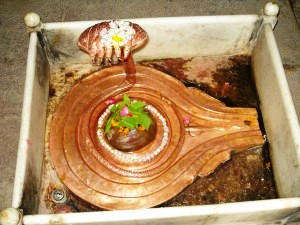
(OMKARESHWAR)
A devotee who takes a holy dip in Matsyodari Teerth and worships Omkareshwar will not have the fear of rebirth. A person who worships Omkareshwar will derive the benefits accruing out of performing Ashwa Medha Yagna. According to Kashi Khand, worshipping Omkareshwar is equivalent to reciting one lakh Rudra Japam and is also equivalent to worshipping all the Shiv Lings in the world. Relevant shlokas from Kashi Khand are given below.
——————————————————————————————————-
Kashi Khand, Chapter 73, Shlok 169
रुद्राणां नियुतं जप्त्वा यत्फलम् सम्यगाप्यते
तत्फलं लभते नूनं भक्त्योङ्कारविलोकनात्
By worshipping Omkareshwar Ling in Kashi, the devotee derives punya benefits of reciting one lakh rudra japam.
———————————————————————————————————
Kashi Khand, Chapter 73, Shlok 171
एकमोंकारमालोक्य समस्ते क्षोणिमण्डले
लिङ्गजातानी सर्वाणि दृष्टानि स्युर्न संशय:
Worshipping Omkareshwar will give punya of worshipping all groups of Shiv Lings in the world.
———————————————————————————————————
A person who is a devotee of Omkareshwar will attain Mukti even if he dies at any place other than Kashi. Lord Shiva told Lord Brahma that with the radiating energy of Omkareshwar, Lord Brahma will be successful in his job of creating human beings. After granting all the boons to Lord Brahma, Lord Shiva disappeared inside the Ling.
Earlier there were five Shiv Lings representing Shiva Panchayatan viz. Akaareshwar, Omkareshwar, Makaareshwar, Naadeshwar and Bindu Ling. Now there are only three Lings, Akaareshwar, Omkareshwar and Makaareshwar.
Omkareshwar Ling is also known as Kapileshwar and Nadeshwar. Omkareshwar ling was stated to be on the banks of Matsyodari Teerth where, during rainy season, the rising river Ganges also used to join.
According to Kashi Khand (Chapter 73), on Ashtami and Chaturdasi days, having a bath in Matsyodari Teerth and praying to Lord Omkareshwar, will cleanse the devotee of all sins. A person praying at Lord Omkareshwar temple is really lucky and will find place in heaven. His ancestors plunge into ecstasy on seeing their descendent praying at the above temple.
LOCATION OF THE TEMPLE
Omkareshwar temple is located at A-33/23, Pathani Tola, North of Machhodari. Matsyodari Teerth as mentioned in Kashi Khand has dried up now and the locality is known as Macchodari. The temple is approachable from a famous locality called Machhodari and if a devotee travels through the left of Machhodari, he will come across Trilochan Police Chowki after which he will take a left turn to reach Omkareshwar.
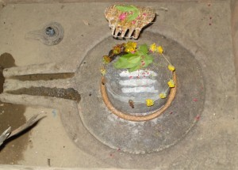
(AKARESHWAR)
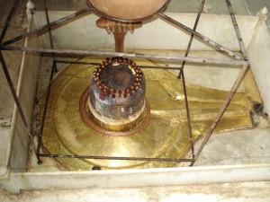
(MAKARESHWAR)
Two other temples Akaareshwar (representing Akaar) are located at A-33/47 and Makaareshwar (representing Makaar) at A-33/25 nearby.
Please watch our YouTube Video about Omkareshwar, Baijnatheshwar and Bhima Shankar at following Link
https://www.youtube.com/watch?v=Qlng0C-dJGQ&t=17s
TYPES OF POOJAS
The temple is open for worship from 05.00 a.m. to 11.00 a.m. and from 05.00 p.m. to 09.00 p.m. Aarties are conducted in the morning. Special importance is on Vaisakha Month which commences some time around April 20, Chaturdasi day after Amavasya (one day before Poornima). Annual Shringar is held on the above day at Omkareshwar. A person undergoing Vratham (fast) on the above day and doing pooja at Omkareshwar temple attains high level of intellect.
As the importance of Matsoydari Teerth has dwindled (due to drying up of the Teerth), people may perform the abhishek of Omkareshwar Ling with Ganges water.
Recently one Parvaty Devi idol has been installed by Shri Shivkoti Anantapuram (Andhra Pradesh) on 5.5.2010.
For doing special pooja, it is advisable to consult the Poojari before hand.
VRIDHA KALESHWAR
According to Kashi Khand, Chapter 24, there was a staunch devotee known as Vridha Kal. In his earlier birth, he was residing in Holy city of Madurai and was known as Siva Sharma. He died in Haridwar and reached Vaikunth. Due to his punya karma, he took rebirth and reached Kashi. He was worshipping one Ling and in due course the Ling was known as Vridha Kaleshwar.
It was believed that Vridha Kal built the temple with the Ling inside but claimed that Lord Mahadev had himself built the temple. Accordingly, even now it is said that whenever we do some good deed, we should not go on bragging about it. The good deed will be recognized in due course by the appropriate authority and due rewards will ensue.
——————————————————————————————————-
Kashi Khand, Chapter 24, Shlok 73
दर्शनात् स्पर्षनातस्य पूजनाच्छुवणान्नते:
वृद्धकालेशलिङ्गस्य सर्व प्राप्नोति वाञ्छितम्
By seeing, touching, worshipping, listening to and saluting this Vridha Kaleshwar Linga, all the wordly desires are achieved.
———————————————————————————————————
There was an original temple in a locality called Daranagar which became extinct and another temple was built in a different locality and was named Kaleshwar. Subsequently, a temple was re-built at the original spot (Daranagar) and to distinguish between the two, the temple in original place is called Vridha Kaleshwar.
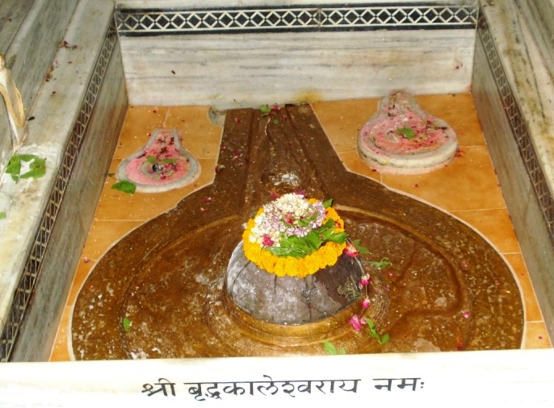
(VRIDHA KALESHWAR)
According to Kashi Khand, a person performing pooja and archana at Vridha Kaleshwar is granted all his wishes, he remains absolutely happy and is free from all sorts of diseases and poverty. Nearby is Kalodak Well, the water from which, will be a cure for all diseases.
——————————————————————————————————-
Kashi Khand, Chapter 24, Shlok 80
वृद्धकालेश्वरे लिङ्गे सेविते न दरिद्रता
नोपसर्गा न वा रोगा न पापं नाघजं फलम्
A devotee who worships Vriddh Kaaleshwar Ling will not face poverty, bad reputation, illness and all his sins will be washed away.
———————————————————————————————————
Vridha Kaleshwar also finds mention in Brahma Vaivart Puran and Ling Puran.
Please watch our YouTube Video about Vridha Kaleshwar at following Link
https://www.youtube.com/watch?v=sNjQ1lbIzmA&t=17s
LOCATION OF THE TEMPLE
Vridha Kaleshwar temple is located at K-52/39, in the premises of Mrityunj Mahadev Temple. The temple is approachable from a famous locality called Bishweshwarganj, which is a great mandi (market place) and travelling to the temple in cycle rickshaw or auto-rickshaw is convenient.
LOCATION OF MRITYUNJAY MAHADEV TEMPLE AS PER GOOGLE MAPS IS GIVEN BELOW
TYPES OF POOJAS
The temple is open for worship throughout the day. People can perform pooja and abhishek as per their own convenience. For doing special pooja, it is advisable to consult the Poojari before hand.
VISHWESHWAR (VISHWANATH TEMPLE)
Vishweshwar Temple also known as Vishwanath Temple is one of the twelve Jyotirlingas. This temple finds mention in various religious texts like Kashi Khand, Shiv Puran etc. According to Kashi Khand, the name of this temple was Moksh Lakshmi Vilas temple which contained five mandaps of which the main mandap was Garbha Griha (Sanctum Sanctorum) where the Vishweshwar Ling was worshipped. Vishweshwar Ling is Swayambhu Ling.
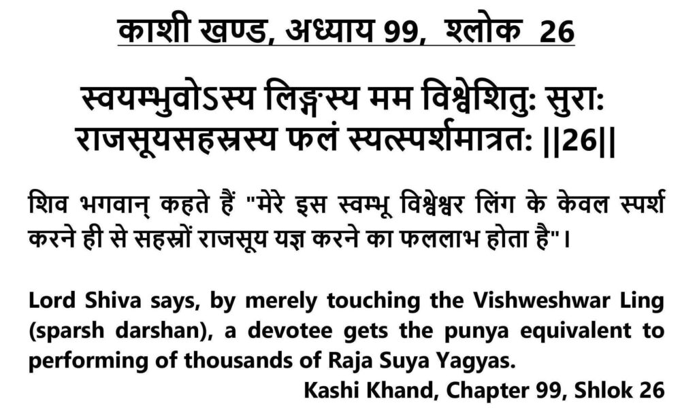
Importance of offering flowers to Lord Vishwanath has been described in Kashi Khand in the following shloka.
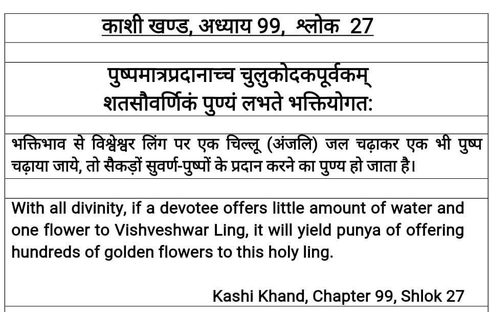
When Lord Shiva was narrating the greatness, he was accompanied by Lord Indra on one side and seven great rishis were surrounding him. (Kashi Khand, Chapter 99, para 5).” Even today, seven poojaries (believed to be the descendents of the great seven rishis) perform a daily pooja at Vishwanatha Temple at around 7-7.30 p.m., known as Sapta Rishi Pooja/Aarti. As on date devotees can see video clippings of this Aarti at www.shrikashivishwanath.org. However, devotees who visit Kashi must make it a point to participate in this Holy ritual and it is certain that they will like the Aarti to their utmost satisfaction.
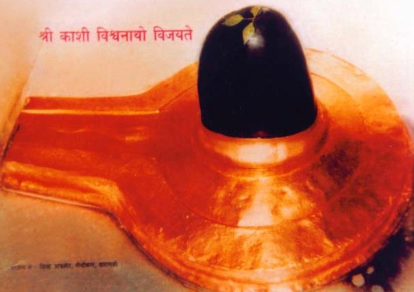
(KASHI VISHWANATH JYOTIRLING)
There are various types of Poojas and rituals prescribed in ancient texts like Kashi Khand, Padma Puran, Linga Puran etc. but considering the present environs it may not be possible for any person to follow the steps mentioned in the above texts. It is believed that taking a dip in the Holy Ganges at Manikarnika Ghat and having darshan at Vishwanath Temple will cleanse all sins of a person.
The greatness of Visweshwar (Vishwanath) has been described amply in Kashi Khand in several places in several chapters and if an attempt is made to reproduce the same here, it may consume much space. However, it is sufficient to say that Vishwanath temple is highly revered and worshipped by several devotees not only from all over India but all over the world.
Every year on the day after Deepavali Amavasya, 56 Bhog Annakoot Shringar is done at Vishwanath Temple and this attracts devotees from all over the world. It is believed that having darshan of this beholding sight will prevent shortage of food at our house.
During the past few years, the temple complex has been expanded and new Kashi Vishwanath Corridor has come up. Presently lakhs of devotees are visiting this holy temple daily.
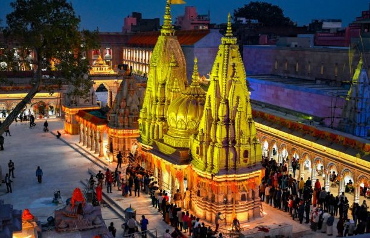
(NEW KASHI VISHWANATH CORRIDOR)
LOCATION OF THE TEMPLE
The temple is located at Ck-35/19, Chowk, Varanasi. The temple area has been widened to be known as Vishwanath Corridor and the entrance is via Gyanvapi.
Please watch our YouTube Video about Kashi Vishwanath at following Link
https://www.youtube.com/watch?v=nVskyJmzxGQ&t=13s
TYPES OF POOJAS
The temple is open almost 24 hours with slight gap of about 1-2 hours. The day begins with Mangla Arti at around 2.30 a.m. to 4.00 A.M. Bhog is at 11.30 to 12.30 noon. Sapta Rishi Pooja is carried out at around 7 to 7.30 p.m. daily followed by Shringar at 9.00 p.m. and Shayan pooja at 11.00 p.m. The timings may vary slightly depending on the seasons (summer/winter).
Special poojas are performed daily at various timings by Nattu Kottai Nagaratthar Chatram (of Tamil Nadu) based in Varanasi. For South Indians visiting Kashi, it is advisable to stay for at least two days in Nattu Kottai Chattram and participate in the poojas undertaken by them.
POOJARIS OF THE TEMPLE
Since 1983, the management of the temple has been taken over by District Administration. The temple was in a congested premises and recently, a compound wall has been demolished to give more leg space and elbow room to the devotees. The details of the temple and various poojas being performed are also available in the temple web site www.shrikashivishwanath.org.